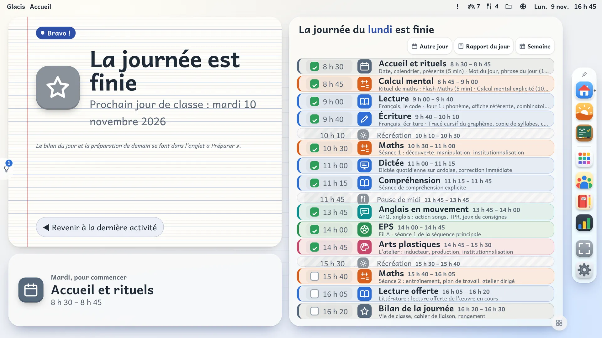

En ce moment
L'activité en cours, lisible du fond de la classe.
Le nom de la séance, ce qui est prévu, le temps qu'il reste, les documents joints. Les élèves savent où ils en sont, et ce qui vient ensuite.

En peinture, un glacis est une fine couche transparente posée sur le tableau. Celui-ci se pose sur le vôtre.
L'appel, les rituels, les tableaux, les outils, l'Atelier, la préparation : tout est au même endroit, sur un seul écran.
Votre journée de classe, prête d'un clic.
Joignez une fiche à une séance : le moment venu, elle s'ouvre au tableau d'un seul clic. La journée, les rituels, les tableaux et les outils sont réunis sur un écran, sans connexion.
Gratuit·Logiciel libre·Sans compte
la journée
L'emploi du temps s'affiche au tableau et suit l'heure. Vous gardez la main : un clic valide l'activité, et la suivante arrive.
En ce moment
Le nom de la séance, ce qui est prévu, le temps qu'il reste, les documents joints. Les élèves savent où ils en sont, et ce qui vient ensuite.
L'appel et la cantine
Un clic sur un prénom note un absent, un autre valide l'appel. La cantine est déjà remplie avec la liste habituelle du jour : il reste à la vérifier.
La semaine
L'emploi du temps type, la semaine, le jour : tout se glisse et se modifie dans Glacis. Un cahier journal au format Word peut être importé.

Le soir
Ce qui a été fait est coché au fil de la journée. Le rapport du jour et la préparation du lendemain se font au même endroit.

votre accueil
L'Accueil se compose comme un écran de tablette : des widgets en trois tailles, à ajouter, déplacer ou retirer.
les rituels
Les élèves déplacent les objets de l'énoncé, puis le schéma en barres apparaît, s'illustre, et la correction arrive quand vous le décidez.
Dans les rituels aussi : calcul mental, Flash Maths, explorer un nombre, lecture flash, mot et phrase du jour.
les tableaux
Du matériel de numération, des instruments de géométrie, une opération posée, un lignage. Tout ce qui est posé au tableau peut être enregistré et repris plus tard.
les outils
Un poids accroché fait pencher la balance, les réglettes s'aimantent bout à bout. Chaque outil se réduit en bas de l'écran et se rouvre d'un clic, là où vous l'aviez laissé.
l'assistant
Un petit robot attend au bord de l'écran. Il sait où vous êtes et propose les tutoriels de cet écran : ils montrent chaque bouton, pas à pas, sans rien modifier.
Une recherche retrouve aussi n'importe quel outil ou réglage.
vos données
Glacis n'a besoin ni d'Internet ni d'un compte. Tout ce qui concerne vos élèves reste dans un dossier de votre ordinateur.
Élèves, emploi du temps, cahier journal, documents : tout est rangé dans un dossier de votre ordinateur. Rien n'est envoyé en ligne.
Le réseau de l'école tombe ? La classe continue. Glacis fonctionne entièrement hors ligne, une fois installé.
3Mo
L'installateur pèse environ 3 Mo. Un mode léger coupe les effets sur les postes anciens.
À la souris depuis le fond de la classe, ou au stylet : en mode TBI, on écrit par-dessus ce qui est affiché.
Glacis se met à jour de lui-même, et refuse tout fichier dont la signature ne correspond pas.

sur Windows
Bientôt disponible
Installation sans droits d'administrateur. L'installateur n'est pas signé par Microsoft : si Windows affiche « Windows a protégé votre ordinateur », choisissez « Informations complémentaires » puis « Exécuter quand même ». Ensuite, Glacis se met à jour de lui-même (Réglages › Mises à jour).
Glacis en est la suite, sous un nouveau nom. C'est une nouvelle application : elle s'installe à côté de l'ancienne.
un logiciel libre
« Glacis – Ma classe » est conçu et développé par Franck VARAULT, enseignant de CP : conception pédagogique, choix des fonctionnalités, architecture, tests en classe et validation de chaque version. Le code a été écrit avec l'aide d'assistants de programmation par IA, sous sa direction.
Logiciel libre sous licence GNU GPL version 3 ou ultérieure ; documentation sous licence CC BY-SA 4.0. Les fichiers de mise à jour sont signés : Glacis refuse un fichier dont la signature ou l'empreinte ne correspond pas. Ce site ne contient aucune donnée d'élève : les prénoms visibles sur les images sont ceux d'une classe de démonstration.
Une question ? contact@glacis-classe.fr